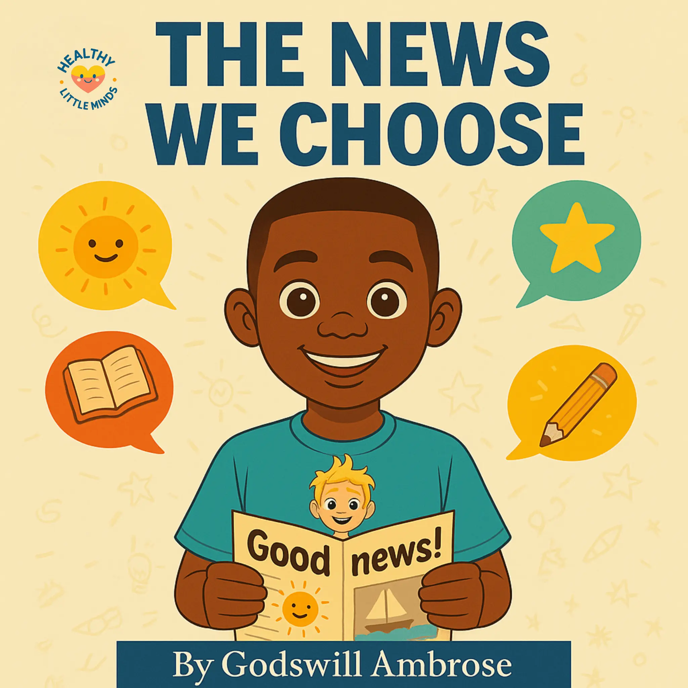

People
A person who listened, helped, played, or made you feel cared for.
Explore a feeling
Gratitude is noticing something good, kind, or helpful. It does not mean pretending hard feelings are gone; we can feel thankful and still have a difficult day.
A person who listened, helped, played, or made you feel cared for.
A laugh, a meal, a sunny walk, a rest, or something you learned.
Your own effort, bravery, patience, or kindness today.

A hopeful story about noticing and sharing positive moments with others.
Read the book